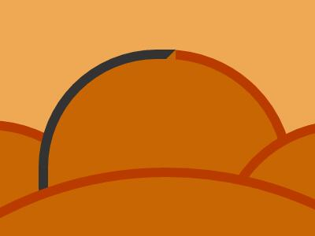

纯CSS3绘制月饼
用CSS3绘图并不是什么新鲜事，业内有很多大牛都已经尝试过。借着中秋，我们就来画个月饼试试吧。
PS：考虑到我并非学美术出身，美观度方面还请各位多多包涵。
PPS：建议使用Chrome浏览器（或其它webkit、blink内核的浏览器）查看，效果最佳。
基本结构
我把月饼大致分为四个部分：主体圆形、周围的花边、面上的纹理、中间的字。
主体圆形
利用border-radius来绘制圆形，这是CSS3绘图中最基本的一个方法。
<!-- CSS code -->
.main{
width: 300px;
height: 300px;
border-radius: 50%;
background-color: #C76603;
border: 4px solid #BA3B00;
}
<!-- HTML code -->
<div class="main"></div>我将背景设为position: relative;，以便其中的元素能够进行绝对定位。使用CSS3绘图时，我们会用到大量的绝对定位。

周围的花边
花边的本质也是圆，只不过小一点。这里为了计算方便，我画了12个，当然真正的月饼肯定不止这么多，只是我偷懒了，因为纯CSS3的环境下没法进行表达式计算，如果借助JavaScript或是LESS、SCSS、SASS的力量，我们就可以很方便地控制数量，想画多少个就画多少个。
每个小圆通过绝对定位进行放置，结合圆心的坐标以及三角函数关系，就能确定每个小圆的坐标位置。注意，由于盒模型的关系，计算出小圆的圆心坐标之后，还要减去半径，得到盒子左上角的坐标才对。

每个小圆之间是互相叠加的，细心的朋友应该会发现了，最后一个圆会覆盖到第一个圆上，使其变成最下面一层，破坏了连贯性。这里我们用一点点小技巧来解决。

首先我们要让0点方向的圆的左半边重新回到最上层，因此我们把0点位置的圆复制一下，再利用border-radius将其变成一个半圆，这样一来，左边就重新出现了。（为了便于理解，这里我改变了一下半圆的颜色和层叠关系）
<!-- CSS code -->
.ear.index12 {
height: 100px;
width: 50px;
border-radius: 50px 0 0 50px;
}
<!-- HTML structure -->
<!-- div.ear.index 0-11 -->
<div class="ear index12"></div>但这也带来了一个新问题：半圆右边有一条竖线。解决办法有两个，一个是单独设置半圆的border-right-color: transparent;，这个方法有效但并不完美，仔细观察会发现顶部留有一个小小的缺口。
另一个方案就是用一个略小一点的色块来把这条线盖住，这里我们采用的就是这种方法，将半圆复制一下，并进行一定的调整，使其刚好能把这条竖线藏起来，同时又不会挡到1点中方向的小圆。
<!-- CSS code -->
.ear.index13 {
width: 25px;
height: 42px;
border-radius: 0 25px 0 0;
border-color: #C76603;
}
<!-- HTML structure -->
<!--div.ear.index 0-12-->
<div class="ear index13"></div>
面上的纹理
表面的纹理我选择了十字交错的直线，主要是因为圆形已经用得够多了，想换个风格。我们先从一个直角开始，剩下的只要旋转并对齐就好了。
这里我选择了ul>li的结构来实现，因为本质上这就是一个由不同长度的线段组成的等距线段列表。只要把ul定好位，然后通过不断的尝试，设定最佳的数量和长度即可。
<!-- CSS code -->
ul{
position: absolute;
padding: 0;
margin: 0;
}
ul.top-qu {
top: 128px;
left: 227px;
transform: rotate(-90deg);
}
li{
border: 5px solid #BA3B00;
height: 0;
padding: 0;
margin: 0 0 11px 0;
list-style: none;
}
li:first-child {
width: 20px;
margin-left: 100px;
}
li:nth-child(2) {
width: 55px;
margin-left: 80px;
}
li:nth-child(3) {
width: 85px;
margin-left: 60px;
}
<!-- li:nth-child 4-9 -->
<!-- HTML structure -->
ul.top-qu>li*10
ul>li默认是竖着往下的，也就是朝向3点钟方向的那一个直角。因此其它3个方向的部分需要借助transform: rotate(90deg);来实现旋转，再调整top和left来进行对齐，就完成了。

中间的字
字的部分就很简单了，在div.text里用两个p写好文字，设置好间距，定好位，给点圆角，就OK了。注意，这里需要给文字的边框设置一下背景色，否则它就是透明的，底下的十字交错结构会显示出来。
<!-- CSS code -->
.text {
position: absolute;
width: 160px;
height: 160px;
background-color: #C76603;
border: 4px solid #BA3B00;
border-radius: 10px;
}
.text p {
font-size: 80px;
line-height: 80px;
padding: 0;
margin: 0;
color: #BA3B00;
}
<!-- HTML code -->
<div class="text">
<p>快中</p>
<p>乐秋</p>
</div>小结
使用CSS3进行图形的绘制，从减轻网络传输负载、提高浏览器渲染效率的角度上讲，是非常好的一个技巧。从技术上讲，只要能把原图产分成基本几何形状的，都能用CSS3来实现。但这项技术最大的不足在于代码编写较为费时费力，涉及大量的定位和数值计算工作，重复性劳动较多，因此实战中只能用于元素较为简单的情况，过于复杂的绘图要求在进度上会比较吃力。
业余时间用CSS3画点小东西，主要是为了熟悉CSS3的一些使用技巧，像盒模型的边框、定位、旋转、斜切，以及如何利用这些基础的东西搭建起一个相对复杂一些的玩意儿。就像是乐高玩具，本身很简单，但发挥想象力，我们可以用它塑造出很多有意思的东西。